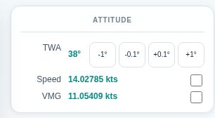
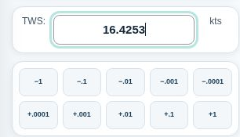
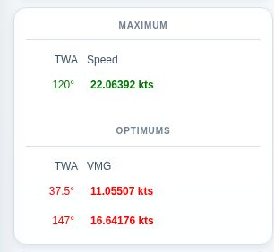
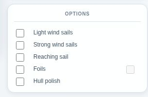
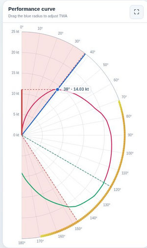
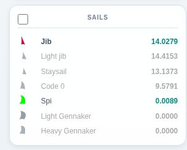
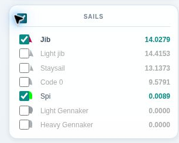
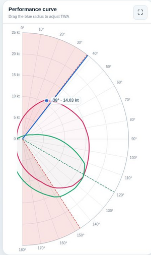
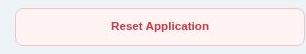

Polars Chart
Right Hand Side Panels
Attitude

This panel mainly provides the boat speed and the VMG, calculated according to the TWS, TWA, sail selected and options applied to the boat.
It also contains a few options/buttons:
- [ -1° ] / [ -0.1° ] / [ +0.1° ] / [ +1° ]
Decrease or increase the TWA with fine or coarse steps. - Boat Speed Checkbox
Displays the Boat Speed projection on the vertical axis of the Chart. - VMG Checkbox
Displays the VMG projection on the vertical axis of the Chart.
TWS Input

This panel provides an input field for the TWS.
Below, the buttons provide a convenient way to decrease or increase the wind speed. The available steps automatically follow the precision requested with nbdigits.
In the example, 4 decimal digits enable steps from 1 kt down to 0.0001 kt.
Optimums

This panel displays the maximum speed and the two Best VMG for the current curve.
These indicators are set in bold if their TWA corresponds exactly to the boat's TWA.
These optimum are clickable to provide a convenient way to quickly set the boat's TWA to the corresponding optimum angle.
The Chart will reflect this change by moving its blue radius, and recalculating all the values displayed accordingly.
Options

This panel reflects the boat setup with the options subscribed before the beginning of the race.
Each checkbox and its label can be clicked to activate the corresponding option.
The boat options are stored independently for each race. That way, you can have different boats setups for different races, and the UI will reload them properly when switching race.
The Sails options enable the related sails, which become active on the Sails panel.

When the Foils option is enabled, a factor appears in bold.
This number is the performance factor of the Foils. It indicates by how much the boat speed is multiplied.
The Foils never "brake" the boat, so the lowest factor we can get is x1.
The best Foils factor we can get however depends on several criterias:
- The boat
Each boat may have different Foils setups.
In general, the max factor is x1.04, but that may vary with future boat setups. - The Attitude
The Foils setup operates best in a given range of TWA and TWS, and operates with decreasing performance outside those two ranges.
To help visualize the Foils performance range, an application option available in the right hand side of this panel activates a layer on the Chart, which draws a thick colored line between the larger circle and the angles graduations.
Yellow indicates a factor of x1, while a dark orange is where the foils factor is at its maximum.
In between, a gradient indicates that the factor is not optimum.
The example beside illustrates the Foils performance range option enabled.
Sails

This panel presents the sails subscribed for this race amongst all available sails.
Jib and Spi are always available, as they are part of the starter pack.
Light Jib and Light Gennaker come with the Light wind sails pack.
Staysail and Heavy Gennaker come with the Strong wind sails pack.
Code 0 come with the Reaching sail pack.
All sails speeds are displayed on the right column of the panel, and the best active sail is showing in bold.
The color of the sail icon on the left of the panel represents the color used on the chart to plot data for this sail.

When the Plot Full Sails Curves option is enabled, the chart is displaying a full curve for each sail checked to be displayed.
All sails can be checked or unchecked, regardless you bought the related option packs.
The bold curve is always the best sail for the current TWA amongst the sails registered.
That means that if you uncheck the currently best sail, you will not see any bold curve on the chart.

In the example beside, the two standard sails, Jib and Spi, are displayed as complete curves.
The speed displayed beside the TWA radius remains the best available sail speed.
The colors used are the same than the sail icons on the Sails side panel.
Reset Application

This button allows to clean the entiere local storage, and get the application from a fully fresh reloading.
You normally don't need to use it, but it happened in the past that after a new version is published, data stored became irrelevant to what the new Chart application understood.
The thing is, such data is not much worth the effort to build a migration mechanism to keep data integrity at any cost.
So if you observe that the Chart application is frozen at startup, it's probably due to such out-of-sync issues.